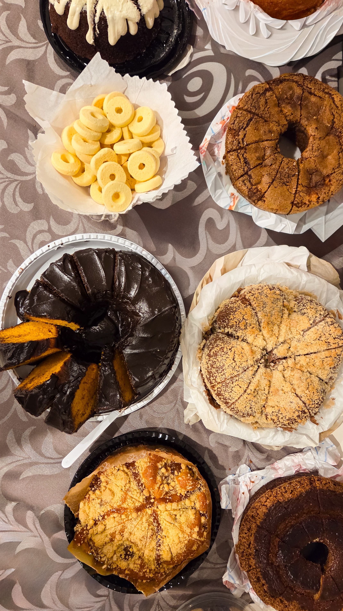

Bolo de Chocolate com Cobertura de Brigadeiro
Uma receita deliciosa de bolo de chocolate com cobertura de brigadeiro, perfeita para qualquer ocasião.

Ingredientes:
- 2 xícaras de farinha de trigo
- 1 xícara de açúcar
- 1/2 xícara de óleo
- 3 ovos
- 1 xícara de leite
- 1 colher de sopa de fermento em pó
- 1 colher de sopa de chocolate em pó
- 1/2 colher de sopa de sal
Modo de preparo:
- Preaqueça o forno a 180°C.
- Misture todos os ingredientes secos em uma tigela.
- Em outra tigela, bata os ovos com o açúcar e o óleo.
- Adicione o leite à mistura líquida e despeje sobre os ingredientes secos.
- Misture bem e despeje em uma forma untada e enfarinhada.
- Cuza por cerca de 45 minutos ou até que um palito inserido no centro saia limpo.
Voltar para a página inicial